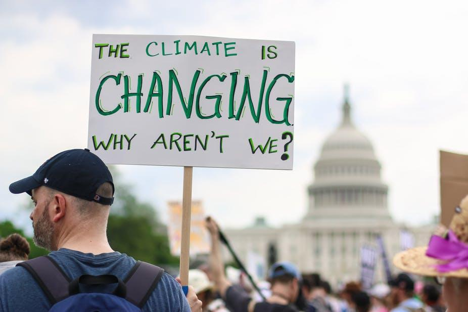
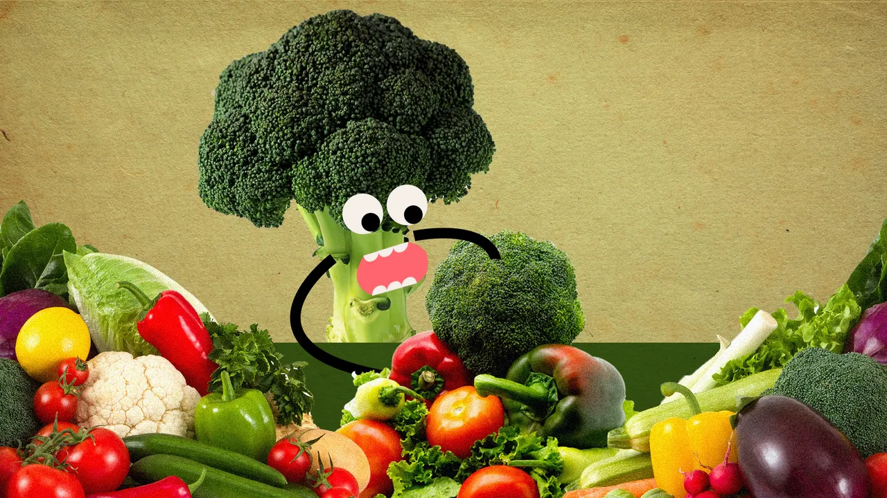

Supporting vulnerable regions will directly contribute not only to Goal 13 but also to the other SDGs. These actions must also go hand in hand with efforts to integrate disaster risk measures, sustainable natural resource management, and human security into national development strategies. It is still possible, with strong political will, increased investment, and using existing technology, to limit the increase in global mean temperature to two degrees Celsius above pre-industrial levels, aiming at 1.5°C, but this requires urgent and ambitious collective action.

Walk, cycle, or take public transport
- Walking or riding a bike instead of driving will reduce greenhouse gas emissions – and help your health and fitness.
Eat more vegetables, avoid meat
- Producing plant-based foods generally results in fewer greenhouse gas emissions and requires less energy, land, and water.
Reduce, reuse, repair & recycle

- To protect our climate, buy fewer things, shop second-hand, repair what you can, and recycle.
Change your home's source of energy
- Switch to renewable sources such as wind or solar. Or install solar panels on your roof to generate energy for your home.
Switch to an electric vehicle
- If you plan to buy a car, consider going electric, with more and cheaper models coming on the market.